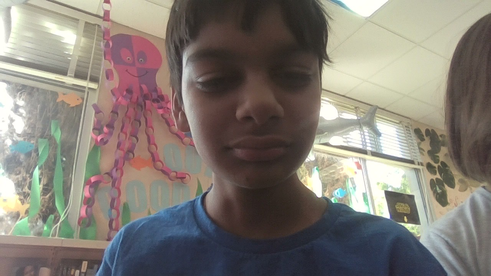

Oak Valley Middle School | Science Olympiad Competitor
I am a student at Oak Valley Middle School in San Diego, actively involved in the Science Olympiad program. I enjoy solving complex problems and exploring the world of competitive science.
My primary area of expertise and interest is in Chemistry events. I specialize in applying chemical principles to competitive lab scenarios and theoretical testing.
🧪 Chemistry SpecializationSan Diego, California - Oak Valley Region